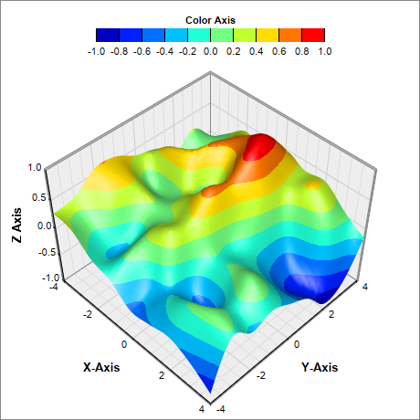
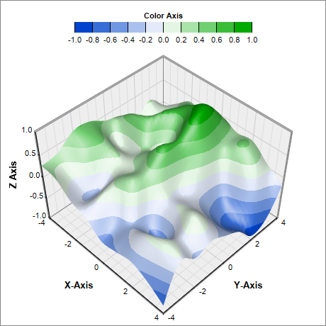
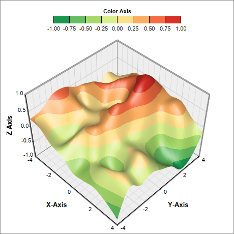
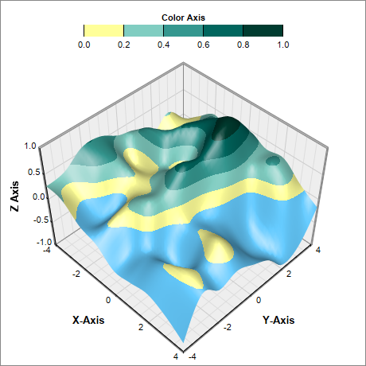

This example demonstrates using various color scales for surface charts.
ChartDirector supports two ways to configure the color scale:
- The ColorAxis.setColorGradient can be used to specify a list of colors to be used for the ColorAxis. With this method, the color scale is determined by other means, and the colors will be applied to the resulting scale, interpolating among the colors if necessary. By default, the color axis scale and labels are automatically determined based on actual data. The axis scale and labels can also be specified by using various Axis methods, such as Axis.setLinearScale, Axis.setLogScale and Axis.setDateScale (please refer to Axis for the full list).
- The ColorAxis.setColorScale can be used to specify both the colors and the associated scale and labels.
This example includes 4 charts to demonstrate both of the above methods.
The following is the command line version of the code in "cppdemo/surfacecolor". The MFC version of the code is in "mfcdemo/mfcdemo". The Qt Widgets version of the code is in "qtdemo/qtdemo". The QML/Qt Quick version of the code is in "qmldemo/qmldemo".
#include "chartdir.h"
void createChart(int chartIndex, const char *filename)
{
// The x and y coordinates of the grid
double dataX[] = {-4, -3, -2, -1, 0, 1, 2, 3, 4};
const int dataX_size = (int)(sizeof(dataX)/sizeof(*dataX));
double dataY[] = {-4, -3, -2, -1, 0, 1, 2, 3, 4};
const int dataY_size = (int)(sizeof(dataY)/sizeof(*dataY));
// Use random numbers for the z values on the XY grid
RanSeries* r = new RanSeries(99);
DoubleArray dataZ = r->get2DSeries(dataX_size, dataY_size, -0.9, 0.9);
// Create a SurfaceChart object of size 460 x 460 pixels with white (0xffffff) background and
// grey (0x888888) border
SurfaceChart* c = new SurfaceChart(460, 460, 0xffffff, 0x888888);
// Set the surface data
c->setData(DoubleArray(dataX, dataX_size), DoubleArray(dataY, dataY_size), dataZ);
// Add a color axis (the legend) in at the top center of the chart, with labels at the bottom.
// Set the axis to flat style.
ColorAxis* cAxis = c->setColorAxis(c->getWidth() / 2, 15, Chart::Top, 250, Chart::Bottom);
cAxis->setTitle("Color Axis");
cAxis->setAxisBorder(Chart::Transparent, 0);
// By default, the color axis is synchronized with the z-axis. The following code remove the
// synchronization so that the color axis will auto-scale independently. Set the auto-scale
// minimum tick spacing to 20 pixels.
cAxis->syncAxis(0);
cAxis->setTickDensity(20);
if (chartIndex == 1) {
// Speicify a color gradient as a list of colors, and use it in the color axis.
int colorGradient[] = {0x0044cc, 0xffffff, 0x00aa00};
const int colorGradient_size = (int)(sizeof(colorGradient)/sizeof(*colorGradient));
cAxis->setColorGradient(false, IntArray(colorGradient, colorGradient_size));
} else if (chartIndex == 2) {
// Specify the color scale to use in the color axis
double colorScale[] = {-1.0, 0x1a9850, -0.75, 0x66bd63, -0.5, 0xa6d96a, -0.25, 0xd9ef8b, 0,
0xfee08b, 0.25, 0xfdae61, 0.5, 0xf46d43, 0.75, 0xd73027, 1};
const int colorScale_size = (int)(sizeof(colorScale)/sizeof(*colorScale));
cAxis->setColorScale(DoubleArray(colorScale, colorScale_size));
} else if (chartIndex == 3) {
// Specify the color scale to use in the color axis. Also specify an underflow color
// 0x66ccff (blue) for regions that fall below the lower axis limit.
double colorScale[] = {0, 0xffff99, 0.2, 0x80cdc1, 0.4, 0x35978f, 0.6, 0x01665e, 0.8,
0x003c30, 1};
const int colorScale_size = (int)(sizeof(colorScale)/sizeof(*colorScale));
cAxis->setColorScale(DoubleArray(colorScale, colorScale_size), 0x66ccff);
}
// Set the center of the plot region at (230, 250), and set width x depth x height to 240 x 240
// x 170 pixels
c->setPlotRegion(230, 250, 240, 240, 170);
// Set the plot region wall thichness to 3 pixels
c->setWallThickness(3);
// Set the elevation and rotation angles to 45 degrees
c->setViewAngle(45, 45);
// Set the perspective level to 20
c->setPerspective(20);
// Spline interpolate data to a 50 x 50 grid for a smooth surface
c->setInterpolation(50, 50);
// Set the axis title
c->xAxis()->setTitle("X-Axis", "Arial Bold", 10);
c->yAxis()->setTitle("Y-Axis", "Arial Bold", 10);
c->zAxis()->setTitle("Z Axis", "Arial Bold", 10);
// Output the chart
c->makeChart(filename);
//free up resources
delete r;
delete c;
}
int main(int argc, char *argv[])
{
createChart(0, "surfacecolor0.png");
createChart(1, "surfacecolor1.png");
createChart(2, "surfacecolor2.png");
createChart(3, "surfacecolor3.png");
return 0;
}
© 2023 Advanced Software Engineering Limited. All rights reserved.